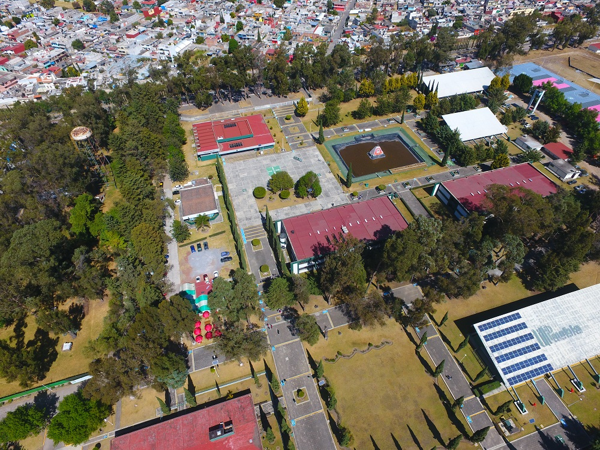

Promovemos un futuro saludable.
WellDataLab es una plataforma gratuita que convierte las guías oficiales de salud de México en herramientas que cualquiera puede usar: calcular su IMC, armar su plato y entender qué bebe y qué come.

Por qué existe WellDataLab
El sobrepeso, la obesidad y el sedentarismo son de los principales retos de salud en México. La comunidad universitaria vive con alta exigencia académica, poco tiempo para moverse y la comida rápida siempre a la mano.
Información hay mucha, pero en redes sociales abundan los consejos contradictorios y sin respaldo. Por eso reunimos en un solo lugar recomendaciones de instituciones reconocidas y las presentamos de forma clara, interactiva y gratuita, para que cuidarte sea un paso a la vez y no una solución mágica.
Lo que nos guía
-
Evidencia científica
Compilamos información veraz de las Normas Oficiales Mexicanas, el IMSS, la Profeco y prestigiosos institutos de salud.
-
Enfoque sostenible
La salud humana está ligada al bienestar del planeta. Impulsamos estilos de alimentación con bajo impacto ambiental.
-
Hábitos prácticos
Traducimos conceptos complejos en herramientas cotidianas: calculadoras, guías interactivas y recomendaciones que puedes aplicar hoy.
Qué encuentras aquí
Todo es gratuito y funciona en tu celular o computadora.
- Calculadora de saludIMC, calorías diarias, agua recomendada y masa muscular estimada.
- El Plato del Bien ComerLos cinco grupos de alimentos y su proporción en cada comida.
- La Jarra del Buen BeberQué bebidas te convienen y cuánta agua tomar al día.
- Comparador de alimentosCompara azúcares, sodio y fibra entre dos alimentos.
- VideotecaRecetas y consejos en video de canales oficiales de salud.
- Recursos oficialesGuías y documentos para consultar o descargar.
Un proyecto de la UTP
WellDataLab se desarrolló como proyecto de estadía en la Universidad Tecnológica de Puebla, durante el periodo mayo–agosto de 2026, alineado con la responsabilidad social de la universidad.
Las herramientas son orientativas y no sustituyen la consulta con un profesional de la salud.
Mi trabajo es acompañarte por el sitio. Tus comentarios nos ayudan a mejorarlo.